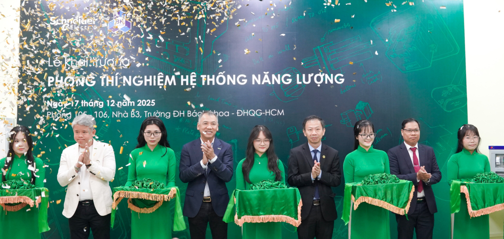

Khánh thành PTN Hệ thống Năng lượng: bước tiến hợp tác quan trọng với Schneider Electric
Các mô-đun quản lý năng lượng hạ áp và mô-đun tự động hóa công nghiệp đầu tiên đã được trang bị cho PTN Hệ thống Năng lượng - một dự án hợp tác chung giữa Trường Đại học Bách khoa và Schneider Electric với mục tiêu đào tạo thực hành, nghiên cứu số hóa chuyên ngành điện và phát triển bền vững cho khoảng 1.000 sinh viên/năm.

Nghi thức khánh thành phòng thí nghiệm diễn ra vào sáng ngày 17/12/2025, có sự tham dự của ông Đồng Mai Lâm - Tổng giám đốc Schneider Electric Việt Nam và Campuchia, PGS. TS. Phạm Trần Vũ - Phó Hiệu trưởng Nhà trường cùng đại diện lãnh đạo các bên và các đối tác đồng hành của dự án. Việc xây dựng PTN Hệ thống Năng lượng đặt tại khoa Điện - Điện tử nằm trong thỏa thuận hợp tác được ký kết giữa Schneider Electric và Trường Đại học Bách khoa vào tháng 2/2025. Theo đó, dự án PTN được triển khai theo định hướng dài hạn năm năm (2025–2029) với các giải pháp và công nghệ tập trung vào các lĩnh vực: Quản lý năng lượng hạ áp, Tự động hóa công nghiệp, Bảo vệ và vận hành lưới điện, Số hóa và phần mềm công nghiệp.
Trong giai đoạn 1 (2025–2026), Schneider Electric đã tài trợ hệ thống mô-đun quản lý năng lượng hạ áp, phục vụ giảng dạy và thực hành các môn về phân phối điện và hệ thống cung cấp điện cùng mô-đun tự động hóa công nghiệp, hỗ trợ các môn học và đồ án chuyên ngành Kỹ thuật Điện, Tự động hóa và Hệ thống Năng lượng điện. Tiếp nhận tài trợ từ Schneider Electric, PGS. TS. Phạm Trần Vũ khẳng định đây là nguồn lực quý báu góp phần quan trọng cho công tác đào tạo, nghiên cứu cho Trường Đại học Bách khoa, qua đó, thể hiện tinh thần hợp tác hiệu quả giữa Nhà trường và doanh nghiệp, nhất là trong bối cảnh trường đang phấn đấu hiện thực hóa các mục tiêu của các nghị quyết trung ương (57-NQ/TW và 71-NQ/TW) về đột phá khoa học công nghệ và phát triển giáo dục đại học.
PGS. TS. Phạm Trần Vũ kỳ vọng rằng từ tiền đề của dự án PTN, Trường Đại học Bách khoa và Schneider Electric sẽ mở rộng hợp tác trong mảng nghiên cứu về hệ thống điện thông minh, năng lượng tái tạo, năng lượng sạch,... - cũng chính là các hướng nghiên cứu trọng tâm mà trường đẩy mạnh trong giai đoạn tới. Với Schneider Electric, dự án này không đơn thuần là việc trao tặng một phòng thực hành mà còn là tâm huyết của doanh nghiệp trong việc đào tạo và phát triển thế hệ kế cận, theo ông Đồng Mai Lâm chia sẻ. Ông Lâm cam kết Schneider Electric sẽ bảo đảm hoạt động của PTN, cập nhật xu hướng công nghệ mới, giúp sinh viên trang bị nhiều kiến thức thực tiễn và tự tin hơn khi gia nhập thị trường lao động, đặc biệt là cho các tập đoàn quốc tế như Schneider Electric.